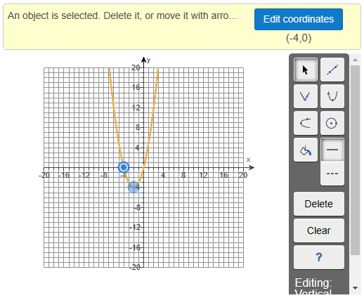
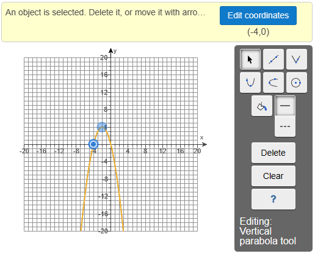
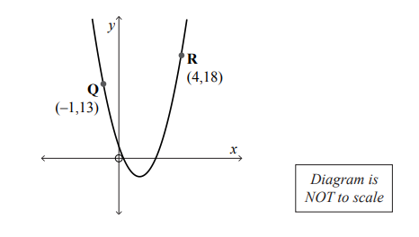
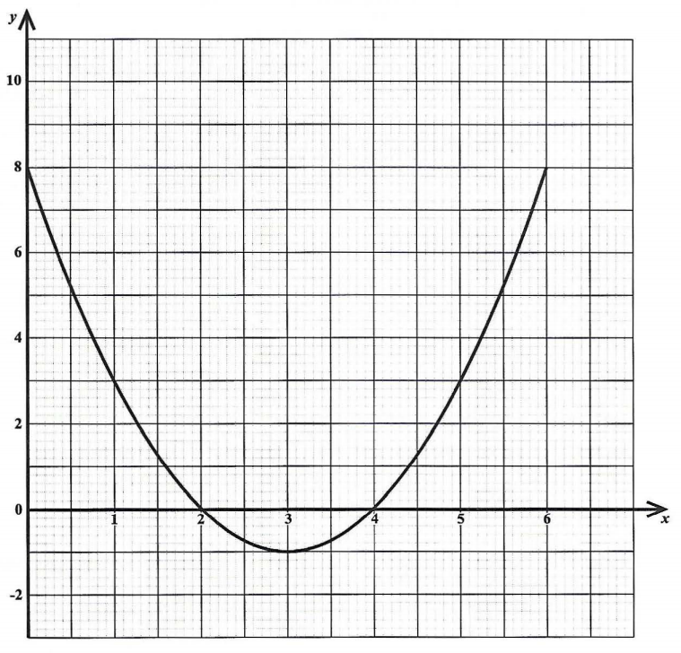
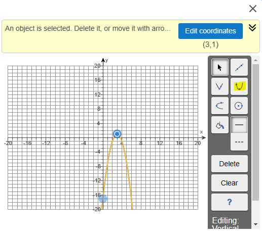
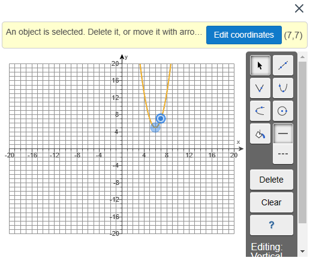
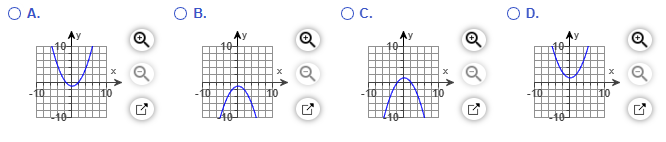
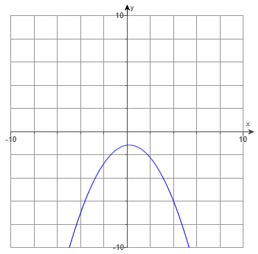

For ACT Students
The ACT is a timed exam...60 questions for 60 minutes
This implies that you have to solve each question in one minute.
Some questions will typically take less than a minute a solve.
Some questions will typically take more than a minute to solve.
The goal is to maximize your time. You use the time saved on those questions you
solved in less than a minute, to solve the questions that will take more than a minute.
So, you should try to solve each question correctly and timely.
So, it is not just solving a question correctly, but solving it correctly on time.
Please ensure you attempt all ACT questions.
There is no negative penalty for a wrong answer.
For JAMB and NZQA Students
Calculators are not allowed. So, the questions are solved in a way that does not require a calculator.
For NSC Students For the Questions:
Any space included in a number indicates a comma used to separate digits...separating multiples of three
digits from
behind.
Any comma included in a number indicates a decimal point. For the Solutions:
Decimals are used appropriately rather than commas
Commas are used to separate digits appropriately.
The Forms of a Quadratic Function are:
(1.) Standard Form/General Form
Note that the standard form is written in descending order of x
$
y = ax^2 + bx + c \\[3ex]
OR \\[3ex]
f(x) = ax^2 + bx + c \\[3ex]
Vertex = \left[-\dfrac{b}{2a}, f\left(-\dfrac{b}{2a}\right)\right] \\[5ex]
$
(2.) Vertex Form
$
y = a(x - h)^2 + k \\[3ex]
OR \\[3ex]
f(x) = a(x - h)^2 + k \\[3ex]
Vertex = (h, k) \\[3ex]
h = x-coordinate\;\;of\;\;the\;\;vertex \\[3ex]
k = y-coordinate\;\;of\;\;the\;\;vertex \\[3ex]
$
(3.) Extended Vertex Form
$
f(x) = a(x - h)^2 + k ...Vertex\;\;Form \\[3ex]
f(x) = a\left(x + \dfrac{b}{2a}\right)^2 + \dfrac{4ac - b^2}{4a}...Extended\;\;Vertex\;\;Form \\[5ex]
Vertex = (h, k) \\[3ex]
\implies \\[3ex]
-h = \dfrac{b}{2a} \\[5ex]
h = -\dfrac{b}{2a} \\[5ex]
k = \dfrac{4ac - b^2}{4a} \\[5ex]
\implies \\[3ex]
\boldsymbol{Vertex = (h, k) = \left(-\dfrac{b}{2a}, \dfrac{4ac - b^2}{4a}\right)} \\[5ex]
$
Solve all questions.
Show all work.
Use at least two methods to solve the questions as applicable.
(1.) For the function: $y = -2x^2 + 8x + 11$
(a.) Determine the vertex.
(b.) Write the function in Vertex form.
(c.) Determine the $y-intercept$
(d.) Determine the $x-intercept$
$
(c.) \\[3ex]
y = -2x^2 + 8x + 11 \\[3ex]
x = 0 \\[3ex]
y = -2(0)^2 + 8(0) + 11 \\[3ex]
y = -2(0) + 0 + 11 \\[3ex]
y = 0 + 0 + 11 = 11 \\[3ex]
y-intercept = (0, 11) \\[3ex]
$
To find the $x-intercept$, set $y = 0$ and solve for $x$
$
(d.) \\[3ex]
y = -2x^2 + 8x + 11 \\[3ex]
y = 0 \\[3ex]
0 = -2x^2 + 8x + 11 \\[3ex]
-2x^2 + 8x + 11 = 0 \\[3ex]
a = -2, b = 8, c = 11 \\[3ex]
x = \dfrac{-b \pm \sqrt{b^2 - 4ac}}{2a} \\[5ex]
x = \dfrac{-8 \pm \sqrt{(-8)^2 - 4(-2)(11)}}{2(-2)} \\[5ex]
x = \dfrac{-8 \pm \sqrt{64 + 88}}{-4} \\[5ex]
x = \dfrac{-8 \pm \sqrt{152}}{-4} \\[5ex]
x = \dfrac{-8 \pm \sqrt{4 * 38}}{-4} \\[5ex]
x = \dfrac{-8 \pm \sqrt{4} * \sqrt{38}}{-4} \\[5ex]
x = \dfrac{-8 \pm 2 * \sqrt{38}}{-4} \\[5ex]
x = \dfrac{-2\left(4 \mp \sqrt{38}\right)}{-4} \\[5ex]
x = \dfrac{4 \mp \sqrt{38}}{2} \\[5ex]
x = \dfrac{4 - \sqrt{38}}{2} \:\:\:OR\:\:\: x = \dfrac{4 + \sqrt{38}}{2} \\[5ex]
x-intercepts = \left(\dfrac{4 - \sqrt{38}}{2}, 0\right) \:\:and\:\: \left(\dfrac{4 + \sqrt{38}}{2},
0\right)
$
(2.) ACT In the standard $(x, y)$ coordinate plane, the graph of $y = 30(x + 17)^2 - 42$ is
a parabola.
What are the coordinates of the vertex of the parabola?
$
y = 30(x + 17)^2 - 42 \\[3ex]
Compare to \\[3ex]
Vertex\:\:Form\:\:of\:\:Quadratic\:\:Function \\[3ex]
y = a(x - h)^2 + k \\[3ex]
-h = 17 \\[3ex]
\rightarrow h = -17 \\[3ex]
k = -42 \\[3ex]
Vertex = (h, k) \\[3ex]
\therefore Vertex = (-17, -42)
$
(3.) For the quadratic function: $f(x) = x^2 + 4x$
(a.) Does the graph open up or down?
(b.) What are the coordinates of the vertex?
(c.) What is the equation of the axis of symmetry?
(d.) Determine the intercepts.
(e.) Graph the function.
(f.) Determine the domain and the range.
(g.) Determine where the function is increasing and/or decreasing.
$
(a.) \\[3ex]
f(x) = x^2 + 4x \\[3ex]
Compare \\[3ex]
f(x) = ax^2 + bx + c \\[3ex]
a = 1 \\[3ex]
1 \gt 0 \\[3ex]
Graph\;\;opens\;\;up \\[3ex]
(b.) \\[3ex]
a = 1 \\[3ex]
b = 4 \\[3ex]
x-coordinate\;\;of\;\;vertex = -\dfrac{b}{2a} = -\dfrac{4}{2(1)} = \dfrac{-4}{2} = -2 \\[5ex]
y-coordinate\;\;of\;\;vertex = f(-2) = (-2)^2 + 4(-2) = 4 - 8 = -4 \\[3ex]
vertex = \left(-\dfrac{b}{2a}, f(-\dfrac{b}{2a})\right) = (-2, -4) \\[5ex]
(c.) \\[3ex]
axis\;\;of\;\;symmetry:\;\; x = h \\[3ex]
x = -2 \\[3ex]
(d.) \\[3ex]
\underline{x-intercept} \\[3ex]
set\;\;y = 0\;\;and\;\;solve\;\;for\;\;x \\[3ex]
f(x) = x^2 + 4x \\[3ex]
x^2 + 4x = f(x) \\[3ex]
x^2 + 4x = y \\[3ex]
x^2 + 4x = 0 \\[3ex]
x(x + 4) = 0 \\[3ex]
x = 0 \;\;\;OR\;\;\; x + 4 = 0 \\[3ex]
x = 0 \;\;\;OR\;\;\; x = -4 \\[3ex]
x-intercepts = (0, 0) \;\;\;and\;\;\; (-4, 0) \\[3ex]
\underline{y-intercept} \\[3ex]
set\;\;x = 0\;\;and\;\;solve\;\;for\;\;y \\[3ex]
f(0) = 0^2 + 4(0) \\[3ex]
f(0) = 0 + 0 = 0 \\[3ex]
y-intercept = (0, 0) \\[3ex]
$
(e.) To graph this function in MML (MyMath Lab), we need two points.
The vertex is one point.
One of the x-intercepts is another point.
The graph of the quadratic function is:

(f.) From this graph:
The domain includes all real numbers of x
The lowest y-value is −4. It is included. It is the minimum value of y
There is no maximum value for y
Therefore, the range includes all real numbers of y from −4 (included) to ∞
$
D = (-\infty, \infty) \\[3ex]
R = [-4, \infty) \\[3ex]
(g.) \\[3ex]
f(x) \uparrow \;\;for\;\; x \in (-2, \infty) \\[3ex]
f(x) \downarrow \;\;for\;\; x \in (-\infty, -2)
$
(4.) For the quadratic function: $f(x) = -x^2 - 4x$
(a.) Does the graph open up or down?
(b.) What are the coordinates of the vertex?
(c.) What is the equation of the axis of symmetry?
(d.) Determine the intercepts.
(e.) Graph the function.
(f.) Determine the domain and the range.
(g.) Determine where the function is increasing and/or decreasing.
$
(a.) \\[3ex]
f(x) = -x^2 - 4x \\[3ex]
Compare \\[3ex]
f(x) = ax^2 + bx + c \\[3ex]
a = -1 \\[3ex]
-1 \lt 0 \\[3ex]
Graph\;\;opens\;\;down \\[3ex]
(b.) \\[3ex]
a = -1 \\[3ex]
b = -4 \\[3ex]
x-coordinate\;\;of\;\;vertex = -\dfrac{b}{2a} = -\dfrac{-4}{2(-1)} = \dfrac{4}{-2} = -2 \\[5ex]
y-coordinate\;\;of\;\;vertex = f(-2) = -(-2)^2 - 4(-2) = -4 + 8 = 4 \\[3ex]
vertex = \left(-\dfrac{b}{2a}, f(-\dfrac{b}{2a})\right) = (-2, 4) \\[5ex]
(c.) \\[3ex]
axis\;\;of\;\;symmetry:\;\; x = h \\[3ex]
x = -2 \\[3ex]
(d.) \\[3ex]
\underline{x-intercept} \\[3ex]
set\;\;y = 0\;\;and\;\;solve\;\;for\;\;x \\[3ex]
f(x) = -x^2 - 4x \\[3ex]
-x^2 - 4x = f(x) \\[3ex]
-x^2 - 4x = y \\[3ex]
-x^2 - 4x = 0 \\[3ex]
-x(x + 4) = 0 \\[3ex]
-x = 0 \;\;\;OR\;\;\; x + 4 = 0 \\[3ex]
x = 0 \;\;\;OR\;\;\; x = -4 \\[3ex]
x-intercepts = (0, 0) \;\;\;and\;\;\; (-4, 0) \\[3ex]
\underline{y-intercept} \\[3ex]
set\;\;x = 0\;\;and\;\;solve\;\;for\;\;y \\[3ex]
f(0) = -0^2 - 4(0) \\[3ex]
f(0) = -0 - 0 = 0 \\[3ex]
y-intercept = (0, 0) \\[3ex]
$
(e.) To graph this function in MML (MyMath Lab), we need two points.
The vertex is one point.
One of the x-intercepts is another point.
The graph of the quadratic function is:

(f.) From this graph:
The domain includes all real numbers of x
The highest y-value is 4. It is included. It is the maximum value of y
There is no minimum value for y
Therefore, the range includes all real numbers of y from −∞ to 4 (included)
$
D = (-\infty, \infty) \\[3ex]
R = (-\infty, 4] \\[3ex]
(g.) \\[3ex]
f(x) \uparrow \;\;for\;\; x \in (-\infty, -2) \\[3ex]
f(x) \downarrow \;\;for\;\; x \in (-2, \infty)
$
(5.) NSC An athlete runs along a straight road.
His distance $d$ from a fixed point $P$ on the road s measured at different times, $n$, and has the form
$d(n) = an^2 + bn + c$
The distances are recorded in the table below.
Time (in seconds)
$1$
$2$
$3$
$4$
$5$
$6$
Distance (in metres)
$17$
$10$
$5$
$2$
$r$
$s$
$(5.1)$ Determine the vlaues of $r$ and $s$
$(5.2)$ Determine the values of $a, b$, and $c$
$(5.3)$ How far is the athlete from $P$ when $n = 8?$
$(5.4)$ Show that the athlete is moving towards $P$ when $n \lt 5$, and away from $P$ when $n \gt 5$
$
\underline{1st\;\;Approach:\;\;Find\;\;the\;\;quadratic\;\;function} \\[3ex]
Point\;1:\;\;(1, 17) \implies n = 1,\;\;d = 17 \\[3ex]
17 = a(1)^2 + b(1) + c \\[3ex]
17 = a(1) + b + c \\[3ex]
17 = a + b + c \\[3ex]
a + b + c = 17...eqn.(1) \\[3ex]
Point\;2:\;\;(2, 10) \implies n = 2,\;\;d = 10 \\[3ex]
10 = a(2)^2 + b(2) + c \\[3ex]
10 = a(4) + 2b + c \\[3ex]
10 = 4a + 2b + c \\[3ex]
4a + 2b + c = 10...eqn.(2) \\[3ex]
Point\;3:\;\;(3, 5) \implies n = 3,\;\;d = 5 \\[3ex]
5 = a(3)^2 + b(3) + c \\[3ex]
5 = a(9) + 3b + c \\[3ex]
5 = 9a + 3b + c \\[3ex]
9a + 3b + c = 5...eqn.(3) \\[3ex]
eqn.(2) - eqn.(1) \rightarrow \\[3ex]
4a + 2b + c - (a + b + c) = 10 - 17 \\[3ex]
4a + 2b + c - a - b - c = -7 \\[3ex]
3a + b = -7...eqn.(4) \\[3ex]
eqn.(3) - eqn.(2) \rightarrow \\[3ex]
9a + 3b + c - (4a + 2b + c) = 5 - 10 \\[3ex]
9a + 3b + c - 4a - 2b - c = -5 \\[3ex]
5a + b = -5...eqn.(5) \\[3ex]
eqn.(5) - eqn.(4) \rightarrow \\[3ex]
5a + b - (3a + b) = -5 - (-7) \\[3ex]
5a + b - 3a - b = -5 + 7 \\[3ex]
2a = 2 \\[3ex]
a = \dfrac{2}{2} \\[5ex]
a = 1 \\[3ex]
From\;\;eqn.(4) \\[3ex]
3a + b = -7...eqn.(4) \\[3ex]
b = -7 - 3a \\[3ex]
b = -7 - 3(1) \\[3ex]
b = -7 - 3 \\[3ex]
b = -10 \\[3ex]
From\;\;eqn.(1) \\[3ex]
a + b + c = 17...eqn.(1) \\[3ex]
c = 17 - a - b \\[3ex]
c = 17 - 1 - (-10) \\[3ex]
c = 17 - 1 + 10 \\[3ex]
c = 26 \\[3ex]
d = an^2 + bn + c \\[3ex]
d = 1n^2 + (-10)n + 26 \\[5ex]
Quadratic\;\;Function:\;\; d = n^2 - 10n + 26 \\[3ex]
$
##########
$
If\;\;you\;\;have\;\;time \\[3ex]
Check\;\;for\;\;Point\;\;4\;\;to\;\;confirm \\[3ex]
Point\;4:\;\;(4, 2) \implies n = 4,\;\;d = 2 \\[3ex]
d = n^2 - 10n + 26 \\[3ex]
d = 4^2 - 10(4) + 26 \\[3ex]
d = 16 - 40 + 26 \\[3ex]
d = 2...confirmed
$
##########
$
(5.1) \\[3ex]
Point\;5:\;\;(5, r) \implies n = 5,\;\;d = r \\[3ex]
r = 5^2 - 10(5) + 26 \\[3ex]
r = 25 - 50 + 26 \\[3ex]
r = 1 \\[3ex]
Point\;6:\;\;(6, s) \implies n = 6,\;\;d = s \\[3ex]
s = 6^2 - 10(6) + 26 \\[3ex]
s = 36 - 60 + 26 \\[3ex]
s = 2 \\[3ex]
\underline{2nd\;\;Approach:\;\;Quadratic\;\;Sequence\;\;Approach} \\[3ex]
Quadratic\;\;Sequence = 17, 10, 5, 2, r, s \\[3ex]
Quadratic\;\;Sequence = 1st,\;\; 2nd,\;\; 3rd,\;\; 4th,\;\; 5th,\;\; 6th \\[3ex]
\underline{1st\;\;Difference} \\[3ex]
10 - 17 = -7 \\[3ex]
5 - 10 = -5 \\[3ex]
2 - 5 = -3 \\[3ex]
r - 2 = r - 2 \\[3ex]
s - r = s - r \\[3ex]
\underline{2nd\;\;Difference} \\[3ex]
-5 - (-7) = -5 + 7 = 2 \\[3ex]
-3 - (-5) = -3 + 5 = 2 \\[3ex]
r - 2 - (-3) = r - 2 + 3 = r + 1 \\[3ex]
s - r - (r - 2) = s - r - r + 2 = s - 2r + 2 \\[3ex]
2nd\;\;Differences\;\;must\;\;be\;\;the\;\;same \\[3ex]
\implies \\[3ex]
2 = 2 \\[3ex]
r + 1 = 2 \\[3ex]
r = 2 - 1 \\[3ex]
r = 1 \\[3ex]
s - 2r + 2 = 2 \\[3ex]
s - 2(1) + 2 = 2 \\[3ex]
s - 2 + 2 = 2 \\[3ex]
s = 2 \\[3ex]
\underline{nth\;\;term\;\;of\;\;a\;\;Quadratic\;\;Sequence} \\[3ex]
QS_n = \dfrac{1st + 3rd - 2(2nd)}{2} * n^2 + \dfrac{8(2nd) - 5(1st) - 3(3rd)}{2} * n + 3(1st) -
3(2nd) + 3rd \\[5ex]
QS_n = \dfrac{17 + 5 - 2(10)}{2} * n^2 + \dfrac{8(10) - 5(17) - 3(5)}{2} * n + 3(17) - 3(10) + 5
\\[5ex]
QS_n = \dfrac{17 + 5 - 20}{2} * n^2 + \dfrac{80 - 85 - 15}{2} * n + 51 - 30 + 5 \\[5ex]
QS_n = \dfrac{2}{2} * n^2 + \dfrac{-20}{2} * n + 26 \\[5ex]
QS_n = n^2 - 10n + 26 \\[3ex]
\implies d = n^2 - 10n + 26 \\[3ex]
(5.2) \\[3ex]
a = 1,\;\; b = -10,\;\; c = 26 \\[3ex]
(5.3) \\[3ex]
When\;\;n = 8,\;\;what\;\;is\;\;d? \\[3ex]
d = n^2 - 10n + 26 \\[3ex]
d = 8^2 - 10(8) + 26 \\[3ex]
d = 64 - 80 + 26 \\[3ex]
d = 10\;metres \\[3ex]
(5.4) \\[3ex]
\underline{By\;\;Inspection} \\[3ex]
Vertex = Minimum\;\;Point = (5, r) = (5, 1) \\[3ex]
This\;\;is\;\;because\;\;the\;\;next\;\;distance:\;\;s = 2...starts\;\;increasing \\[3ex]
\underline{By\;\;Standard\;\;Form\;\;Computation} \\[3ex]
d = n^2 - 10n + 26 \\[3ex]
Compare:\;\; y = ax^2 + bx + c \\[3ex]
a = 1,\;\; b = -10,\;\; c = 26 \\[3ex]
Vertex = \left(-\dfrac{b}{2a}, f\left(-\dfrac{b}{2a}\right)\right) \\[5ex]
-\dfrac{b}{2a} = -\dfrac{-10}{2(1)} = \dfrac{10}{2} = 5 \\[5ex]
f\left(-\dfrac{b}{2a}\right) = f(5) = d(5) = 1 \\[3ex]
The\;\;Quadratic\;\;Function\;\;is: \\[3ex]
(time, distance) = ((1, 17),\;\;(2, 10)\;\;(3, 5)\;\;(4, 2)\;\;(5, 1)\;\;(6, 2)\;\;(7, 5)\;\;(8,
10)\;\;(9, 17) \\[3ex]
$
Based on the Table of Values or the value pairs, we see that:
As the time approaches five seconds $(n \lt 5)$, the distance from the fixed point, $P$ decreases.
This indicates that the athlete is moving towards $P$
After five seconds $(n \gt 5)$, the distance from the fixed point, $P$ starts increasing. This
indicates that the athlete is moving away from $P$
(6.) NZQA The diagram below shows a sketch of part of the graph $y = ax^2 + bx + c$
The two points $Q$ and $R$ each lie on the graph at co-ordinates $(-1, 13)$ and $(4, 18)$

Find the values of the numbers $a$ and $b$
$
y = ax^2 + bx + 2 \\[3ex]
1st\;\;Point:\;\; (-1, 13) \implies x = -1, y = 13 \\[3ex]
13 = a(-1)^2 + b(-1) + 2 \\[3ex]
13 = a(1) - b + 2 \\[3ex]
13 = a - b + 2 \\[3ex]
a - b + 2 = 13 \\[3ex]
a - b = 13 - 2 \\[3ex]
a - b = 11...eqn.(1) \\[3ex]
2nd\;\;Point:\;\; (4, 18) \implies x = 4, y = 18 \\[3ex]
18 = a(4)^2 + b(4) + 2 \\[3ex]
18 = 16a + 4b + 2 \\[3ex]
16a + 4b + 2 = 18 \\[3ex]
16a + 4b = 18 - 2 \\[3ex]
16a + 4b = 16 \\[3ex]
Simplify:\;\;Divide\;\;all\;\;sides\;\;by\;\;4 \\[3ex]
4a + b = 4...eqn.(2) \\[3ex]
To\;\;find\;\;a \\[3ex]
eqn.(2) + eqn.(1) \rightarrow \\[3ex]
(4a + b) + (a - b) = 4 + 11 \\[3ex]
4a + b + a - b = 15 \\[3ex]
5a = 15 \\[3ex]
a = \dfrac{15}{5} \\[5ex]
a = 3 \\[3ex]
From\;\;eqn.(1) \\[3ex]
a - b = 11 \\[3ex]
a - 11 = b \\[3ex]
3 - 11 = b \\[3ex]
-8 = b \\[3ex]
b = -8 \\[3ex]
\underline{Check}...if\;\;you\;\;have\;\;time \\[3ex]
y = ax^2 + bx + 2 \\[3ex]
y = 3x^2 - 8x + 2 \\[3ex]
When\;\; x = -1 \\[3ex]
y = 3(-1)^2 - 8(-1) + 2 \\[3ex]
y = 3(1) + 8 + 2 \\[3ex]
y = 3 + 8 + 2 \\[3ex]
y = 13 \\[3ex]
works\;\;for\;\;(-1, 13)...1st\;\;point \\[3ex]
When\;\; x = 4 \\[3ex]
y = 3(4)^2 - 8(4) + 2 \\[3ex]
y = 3(16) - 32 + 2 \\[3ex]
y = 48 - 32 + 2 \\[3ex]
y = 18 \\[3ex]
works\;\;for\;\;(4, 18)...2nd\;\;point
$
(7.) CSEC The diagram below shows the graph of the function $f(x) = x^2 - 6x + 8$ for values of
$x$ from
$0$ to $6$

(i) Use the graph to solve the equation $x^2 - 6x + 8 = 0$
(ii) Write down the coordinates of the minimum point in the form $(x, y)$
(iii) Write $x^2 - 6x + 8$ in the form $a(x + h)^2 + k$ where $a, h$ and $k$ are constants.
(iv) On the same axes, draw the graph of the straight line $g(x) = x - 2$
(v) Hence, solve the equation $x^2 - 6x + 8 = x - 2$
(8.) For the quadratic function: $g(x) = -2(x - 3)^2 + 1$
(a.) Determine the vertex
(b.) Determine the axis of symmetry
(c.) Determine whether the graph is concave up or concave down.
(d.) Graph the quadratic function.
$
(a.) \\[3ex]
g(x) = -2(x - 3)^2 + 1 \\[3ex]
Compare \\[3ex]
g(x) = a(x - h)^2 + k \\[3ex]
h = 3 \\[3ex]
k = 1 \\[3ex]
vertex = (h, k) = (3, 1) \\[3ex]
(b.) \\[3ex]
axis\;\;of\;\;symmetry:\;\; x = h \\[3ex]
x = 3 \\[3ex]
(c.) \\[3ex]
a = -2 \\[3ex]
-2 \lt 0 \\[3ex]
Graph\;\;is\;\;concave\;\;down \\[3ex]
$
To graph this function in MML (MyMath Lab), we need two points.
The vertex is one point.
Let us find the y-intercept as the second point
$
g(0) = -2(0 - 3)^2 + 1 \\[3ex]
g(0) = -2(-3)^2 + 1 \\[3ex]
g(0) = -2(9) + 1 \\[3ex]
g(0) = -18 + 1 \\[3ex]
g(0) = -17 \\[3ex]
y-intercept = (0, -17) \\[3ex]
$
(d.) The graph of the quadratic function is:

(9.) WASSCE
(a.) Copy and complete the table of values for $y = x^2 + \dfrac{1}{2}$ for $-4 \le x \le 4$
$x$
$-4$
$-3$
$-2$
$-1$
$0$
$1$
$2$
$3$
$4$
$y$
$9.5$
$0.5$
(b.) Using a scale of $2\;cm$ to $1\;unit$ on the $x-axis$ and $2\;cm$ to $2\;units$ on the $y-axis$,
draw the graph
for $y = x^2 + \dfrac{1}{2}$
(c.) Use the graph to:
(i.) Solve $x^2 = 5$
(ii) Find the range of values of $x$ for which $y$ decreases as $x$ increases
(a.)
$x$
$-4$
$-3$
$-2$
$-1$
$0$
$1$
$2$
$3$
$4$
$x^2$
$16$
$9$
$4$
$1$
$0$
$1$
$4$
$9$
$16$
$\dfrac{1}{2}$
$0.5$
$0.5$
$0.5$
$0.5$
$0.5$
$0.5$
$0.5$
$0.5$
$0.5$
$y = x^2 + \dfrac{1}{2}$
$16.5$
$9.5$
$4.5$
$1.5$
$0.5$
$1.5$
$4.5$
$9.5$
$16.5$
(b.) Draw the graph according to the scale specified in the question.
$
(c.) \\[3ex]
(i) \\[3ex]
y = x^2 + \dfrac{1}{2} \\[5ex]
x^2 = 5 \\[3ex]
y = 5 + \dfrac{1}{2} \\[5ex]
y = 5 + 0.5 \\[3ex]
y = 5.5 \\[3ex]
$
Draw the graph of $y = 5.5$...this is the graph of a constant. It is a straight line graph
Find the intersection of the straight line graph and the parabola (graph of the quadratic function)
The point of intersection is the solution of $x^2 = 5$
To find the range of values of $x$ for which $y$ decreases as $x$ decreases, let us first find the
vertex: the minimum point
on the graph (in this case).
This is because it is the point at which the graph cuts in half, and the $y-values$ begin to repeat
$
(ii) \\[3ex]
y = x^2 + \dfrac{1}{5} \\[5ex]
Compare\;\;to\;\; y = ax^2 + bx + c \\[3ex]
a = 1 \\[3ex]
b = 0 \\[3ex]
c = \dfrac{1}{5} \\[5ex]
x-component\;\;of\;\;the\;\;vertex \\[3ex]
= -\dfrac{b}{2a} \\[5ex]
= -\dfrac{0}{2(1)} \\[5ex]
= 0 \\[3ex]
$
Based on the graph, the $y-values$ begin to decrease from $x = -4$ up to the minimum point (vertex).
Therefore, the range of values of $x$ for which $y$ decreases as $x$ decreases is $[-4, 0]$
(10.) For the quadratic function: $g(x) = 2(x - 6)^2 + 5$
(a.) Determine the vertex
(b.) Determine the axis of symmetry
(c.) Determine whether the graph is concave up or concave down.
(d.) Graph the quadratic function.
$
(a.) \\[3ex]
g(x) = 2(x - 6)^2 + 5 \\[3ex]
Compare \\[3ex]
g(x) = a(x - h)^2 + k \\[3ex]
h = 6 \\[3ex]
k = 5 \\[3ex]
vertex = (h, k) = (6, 5) \\[3ex]
(b.) \\[3ex]
axis\;\;of\;\;symmetry:\;\; x = h \\[3ex]
x = 6 \\[3ex]
(c.) \\[3ex]
a = 2 \\[3ex]
2 \gt 0 \\[3ex]
Graph\;\;is\;\;concave\;\;up \\[3ex]
$
To graph this function in MML (MyMath Lab), we need two points.
The vertex is one point.
Let us find the second point
$
let\;\;x = 7 \\[3ex]
g(7) = 2(7 - 6)^2 + 5 \\[3ex]
g(7) = 2(1)^2 + 5 \\[3ex]
g(7) = 2(1) + 5 \\[3ex]
g(7) = 2 + 5 \\[3ex]
g(7) = 7 \\[3ex]
2nd\;\;point = (7, 7) \\[3ex]
$
(d.) The graph of the quadratic function is:

(11.) For the quadratic function: $f(x) = -\dfrac{1}{3}\left(x - \dfrac{1}{5}\right)^2 - \dfrac{7}{6}$
(a.) Determine the vertex
(b.) Determine the axis of symmetry
(c.) Determine whether the graph is concave up or concave down.
(d.) Graph the quadratic function.

$
(a.) \\[3ex]
f(x) = -\dfrac{1}{3}\left(x - \dfrac{1}{5}\right)^2 - \dfrac{7}{6} \\[5ex]
Compare \\[3ex]
f(x) = a(x - h)^2 + k \\[3ex]
h = \dfrac{1}{5} \\[5ex]
k = -\dfrac{7}{6} \\[5ex]
vertex = (h, k) = \left(\dfrac{1}{5}, -\dfrac{7}{6}\right) \\[5ex]
(b.) \\[3ex]
axis\;\;of\;\;symmetry:\;\; x = h \\[3ex]
x = \dfrac{1}{5} \\[5ex]
(c.) \\[3ex]
a = -\dfrac{1}{3} \\[5ex]
-\dfrac{1}{3} \lt 0 \\[5ex]
Graph\;\;is\;\;concave\;\;down \\[3ex]
$
To choose the graph of this function in MML (MyMath Lab), we need two points.
We shall use the process of elimination.
The graph opens downward.
So, options A. and D. are eliminated.
Also, looking at the vertex, the value of y is negative.
Option C. is eliminated.
That leaves us with Option B. as the answer.
(d.) The graph of the quadratic function is:

(12.)
(13.) WASSCE:FM If $y = 2x^2 - 5x + 3$ is expressed in the form $y = p(x + q)^2 + r$ where $p, q$
and $r$
are constants, find $(q + r)$
$
Standard\;\;Form:\;\; y = 2x^2 - 5x + 3 \\[3ex]
Compare:\;\; y = ax^2 + bx + c \\[3ex]
a = 2,\;\; b = -5,\;\; c = 3 \\[3ex]
\underline{1st\;\;Method:\;\;Vertex\;\;Formula} \\[3ex]
Vertex = \left[-\dfrac{b}{2a}, f\left(-\dfrac{b}{2a}\right)\right] \\[5ex]
Vertex = (h, k) \\[3ex]
h = -\dfrac{b}{2a} = -\dfrac{-5}{2(2)} = \dfrac{5}{4} \\[5ex]
k = f\left(-\dfrac{b}{2a}\right) = f\left(\dfrac{5}{4}\right) \\[5ex]
f(x) = 2x^2 - 5x + 3 \\[3ex]
k = f\left(\dfrac{5}{4}\right) = 2\left(\dfrac{5}{4}\right)^2 - 5\left(\dfrac{5}{4}\right) + 3
\\[5ex]
k = 2\left(\dfrac{5}{4}\right)\left(\dfrac{5}{4}\right) - \dfrac{25}{4} + \dfrac{3}{1} \\[5ex]
k = \dfrac{25}{8} - \dfrac{25}{4} + \dfrac{3}{1} \\[5ex]
k = \dfrac{25 - 50 + 24}{8} \\[5ex]
k = -\dfrac{1}{8} \\[5ex]
Vertex = (h, k) = \left(\dfrac{5}{4}, -\dfrac{1}{8}\right) \\[5ex]
Vertex\:\: Form:\:\: y = a(x - h)^2 + k \\[3ex]
Vertex\:\: Form:\:\: y = 2\left(x - \dfrac{5}{4}\right)^2 - \dfrac{1}{8} \\[5ex]
\underline{2nd\;\;Method:\;\;Completing\;\;the\;\;Square\;\;Method} \\[3ex]
Standard\;\;Form:\;\; y = 2x^2 - 5x + 3 \\[3ex]
y = 2\left(x^2 - \dfrac{5}{2}x + \dfrac{3}{2}\right) \\[5ex]
Coefficient\;\;of\;\;x = -\dfrac{5}{2} \\[5ex]
Half\;\;of\;\;it = \dfrac{1}{2} * -\dfrac{5}{2} = -\dfrac{5}{4} \\[5ex]
Square\;\;it = \left(-\dfrac{5}{4}\right)^2 \\[5ex]
y = 2\left[x^2 - \dfrac{5}{2}x + \left(-\dfrac{5}{4}\right)^2 + \dfrac{3}{2} -
\left(-\dfrac{5}{4}\right)^2\right] \\[5ex]
y = 2\left[\left(x - \dfrac{5}{4}\right)^2 + \dfrac{3}{2} - \dfrac{25}{16}\right] \\[5ex]
y = 2\left[\left(x - \dfrac{5}{4}\right)^2 + \dfrac{24}{16} - \dfrac{25}{16}\right] \\[5ex]
y = 2\left[\left(x - \dfrac{5}{4}\right)^2 + \dfrac{24 - 25}{16}\right] \\[5ex]
y = 2\left[\left(x - \dfrac{5}{4}\right)^2 - \dfrac{1}{16}\right] \\[5ex]
y = 2\left(x - \dfrac{5}{4}\right)^2 - 2\left(\dfrac{1}{16}\right) \\[5ex]
y = 2\left(x - \dfrac{5}{4}\right)^2 - \dfrac{1}{8} \\[5ex]
Compare\;\;to \\[3ex]
Question\;\;Form:\;\; y = p(x + q)^2 + r \\[3ex]
\implies \\[3ex]
p = 2 \\[3ex]
q = -\dfrac{5}{4} \\[5ex]
r = -\dfrac{1}{8} \\[5ex]
q + r \\[3ex]
= -\dfrac{5}{4} + -\dfrac{1}{8} \\[5ex]
= -\dfrac{10}{8} - \dfrac{1}{8} \\[5ex]
= \dfrac{-10 - 1}{8} \\[5ex]
= -\dfrac{11}{8} \\[5ex]
= -1\dfrac{3}{8}
$
(14.) CSEC Given that $x^2 + ax + b = (x + 2)^2 - 3$, work out the values of $a$ and $b$
(15.) For the quadratic function: $f(x) = -\dfrac{1}{3}\left(x - \dfrac{1}{5}\right)^2 - \dfrac{7}{6}$
(a.) Determine the vertex
(b.) Determine the axis of symmetry
(c.) Determine whether the graph is concave up or concave down.
(d.) Graph the quadratic function.
 For ACT Students
For ACT Students